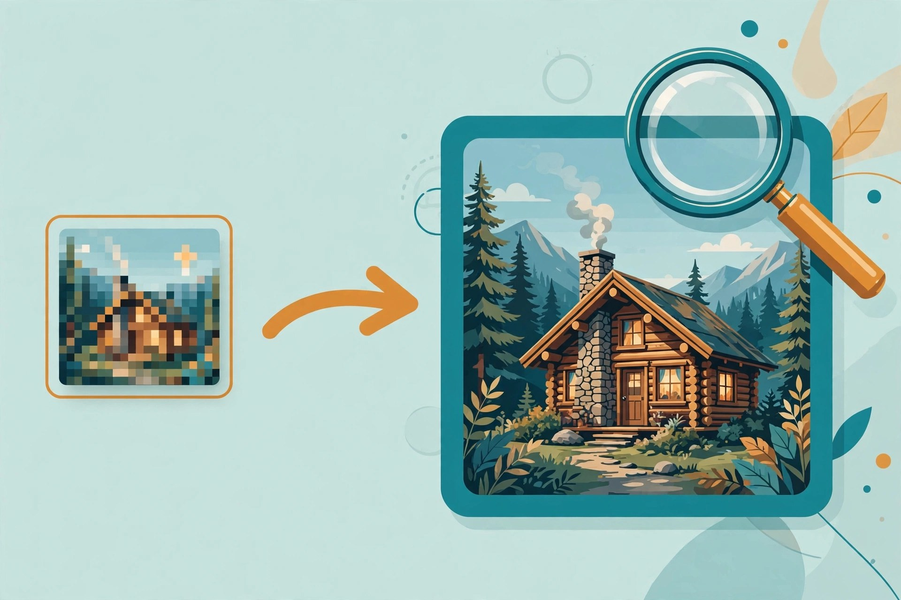

I Tested 4 No Sign Up AI Image Upscalers and Only 2 Let Me Download (2026)
Upscalers are where "no sign-up" claims go to die — the classic download ransom lives here. So I took a 320-pixel test image and ran four upscalers through the entire loop as a logged-out visitor: upload, upscale, download, no account, no email. Two delivered a file. One trapped me in a verification loop. One doesn't exist anymore. Ranked below by friction — fewest clicks to a downloaded file first.

The comparison, up front
| Tool | Best for | Sign-up needed? | Credit card? | Free limit | Clicks to download |
|---|---|---|---|---|---|
| imageupscaler.com | Fast 4x upscale, no account | No — 5 guest credits | No | 2x/4x free; 6x/8x paid | 3 |
| bigjpg.com | Artwork and illustrations | No — login only speeds things up | No | 2x/4x free anonymous; 8x/16x paid | 3 |
| upscale.media | — | No wall, but verification loop blocked us | No | 2x free; 4x/8x paid (couldn't verify — no output) | Blocked |
| Zyro Image Upscaler | — | Discontinued — Zyro merged into Hostinger, tool page is gone | — | ||
1. imageupscaler.com — the fastest honest one
Three clicks: Start Upscaling, Start processing, Download image. My 320×213 test image came back at 1280×852 — a real 4x. Anonymous visitors get a credit balance of 5, and this run cost exactly 1. No watermark visible on the preview, though I didn't do a pixel-level inspection. An ad popup and a cookie banner got in the way; both were dismissible, neither blocked anything.
Getting the most out of it: guest credits are finite and each image costs one, so go straight for 4x — don't burn credits re-running the same image at 2x first. 6x and 8x are subscription-only, so if you need those, this isn't your tool.
2. bigjpg.com — slow but steady
Also three clicks and zero account: upload, confirm the default 2x, download. The catch is patience — the anonymous queue took about two minutes for a tiny test image. The page pitches "log in for faster, more, more stable" upscaling, but that's a speed upsell, not a wall. Anonymous users get 2x and 4x; 8x and 16x are paid.
Getting the most out of it: since 4x is allowed anonymously, pick 4x on the first run instead of doing 2x and coming back — the queue is the expensive part, not the credits. Good for anime-style art and illustrations, which is what its engine is tuned for.
3. upscale.media — the loop that never ends
No login wall anywhere. Upload worked fine. Then clicking enhance opened a reCAPTCHA image challenge — and I never got past it. Three full rounds of correctly solved challenges (hydrants, bicycles, buses), each answered with "please try again," looping back to the start. No output, no error, no way forward. Odd detail: on a first-ever visit the page already claimed I had "used up 5 free AI conversions," which suggests the quota is counted per IP, not per account.
This is the pattern I described as trap #5 in my email-traps field notes — not a login wall, but the same outcome: you came for a result and left with nothing. I'm not listing it as a wall; I'm listing it as not working.
4. Zyro Image Upscaler — gone
Zyro was absorbed into Hostinger and the standalone upscaler page is dead — one URL redirects to a Hostinger blog announcement, the other times out. I'm including it because it still shows up in "free upscaler" roundups. If a directory lists it without checking, that's a directory problem. Ours won't.
How to upscale a photo without signing up
The whole process, if you pick one of the two working tools above: open the site in a private window, upload your image (JPG or PNG, both accepted everywhere I tested), choose 4x, wait for processing, download the result. That's it — no email field appears at any point. If one ever does, you've found a wall, not a step; close the tab and use the other tool. For anything you'll print or hand to a client, zoom into the downloaded file at 100% first — free upscalers smooth more than they restore, and heavy compression artifacts in the source will survive the trip.
FAQ
Do free upscalers add watermarks?
Neither of the two tools that delivered showed an obvious watermark on preview, but I didn't inspect output pixel by pixel. Watermark policies change quietly — if clean output matters, check your own file before trusting a roundup, including this one.
Is 4x always better than 2x?
Not necessarily. 4x gives you more pixels, not more detail — a blurry 320px source becomes a smoother 1280px image, not a sharper one. Match the upscale factor to your target size instead of maxing it out.
Why do some upscalers demand login at download?
Because the download is the leverage point — you've already invested the upload and the wait. It's the most common of the five email traps in this category, and it's exactly what this test was designed to catch. Both tools above passed it.
What about upscaling AI-generated images?
Same tools work. If you generate with one of the no-signup generators in our image generator roundup, you can pipe the result straight into imageupscaler.com for a 4x finish — still zero accounts end to end.